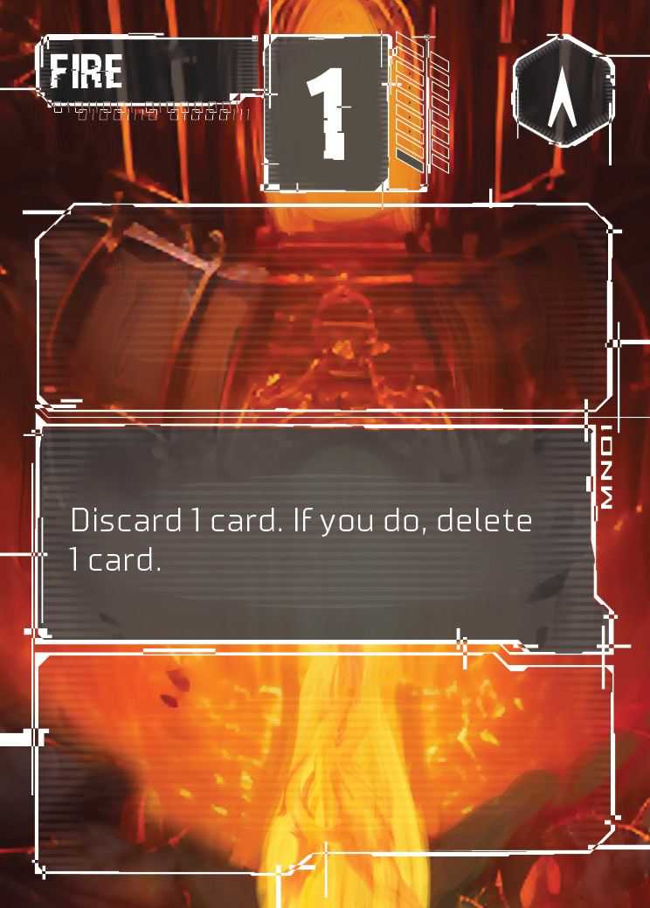
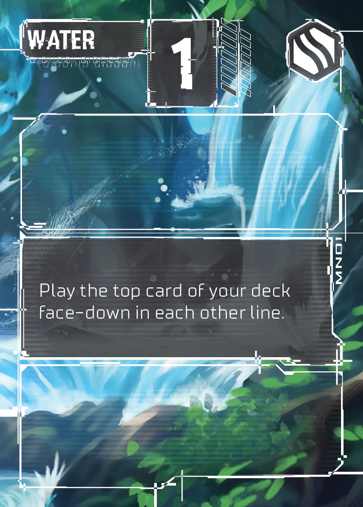
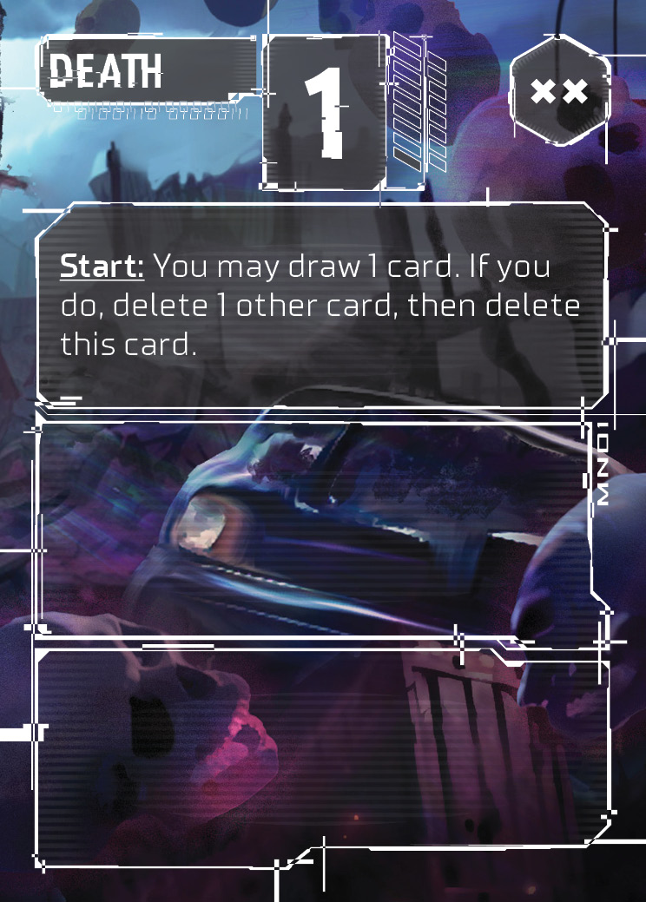

VICTORY /
A — CONVERGENCIA
B — EL PULSO
C — GRID AWAKENING
D — ESCRITURA INEVITABLE
★ DEFINITIVA
↺ RESET
PROTOCOLO COMPILADO

Fuego

Agua

Muerte
Compilación completada
Compilaste los 3 protocolos. La realidad ha sido reescrita.